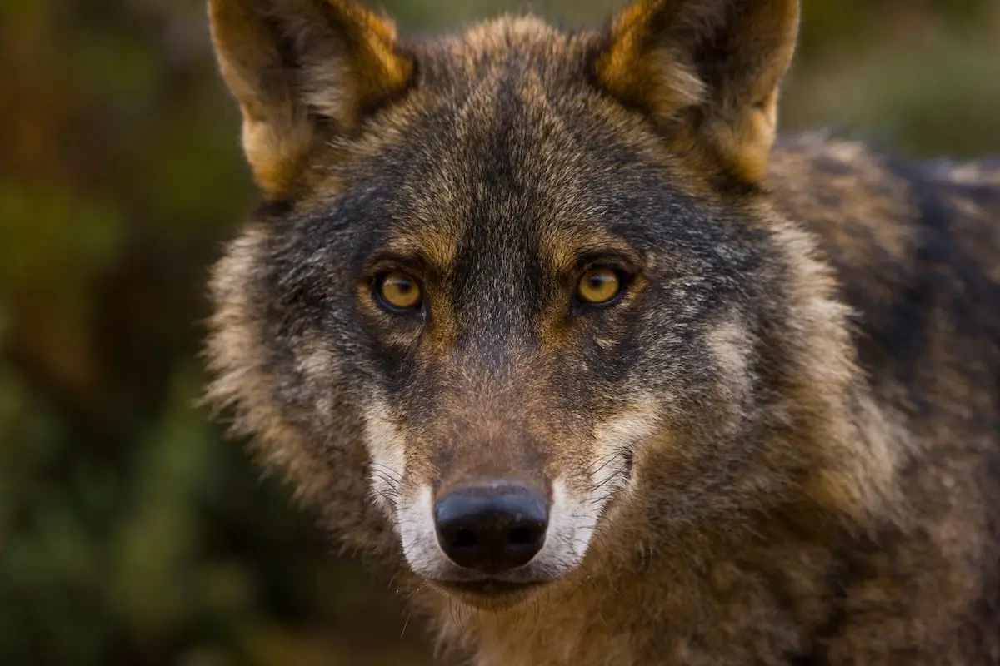
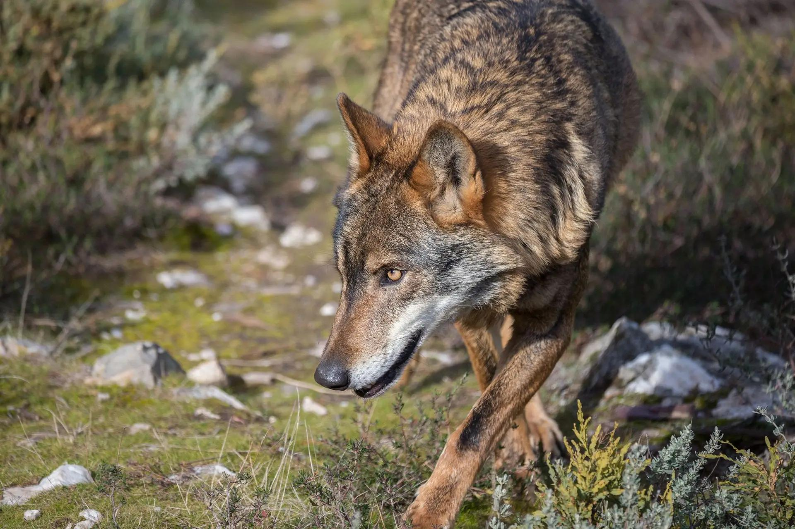
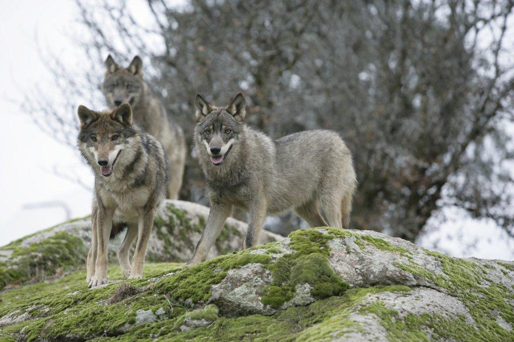
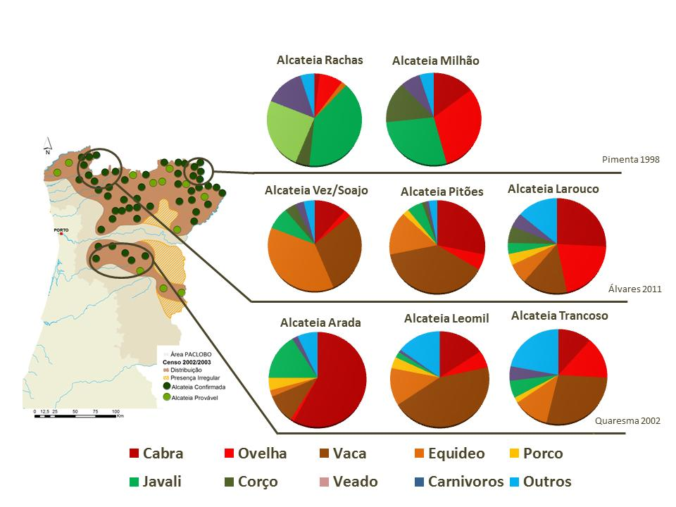
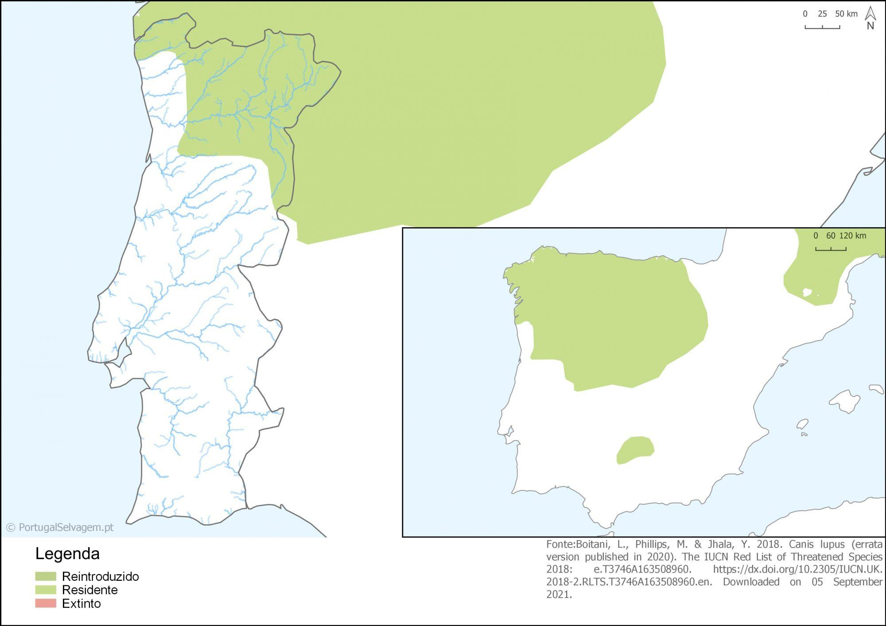
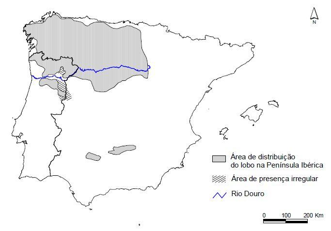

O lobo ibérico (Canis lupus signatus) é uma subespécie de lobo que habita a Península Ibérica. É um animal inteligente, social e altamente adaptável, vivendo em matilhas organizadas numa hierarquia bem definida. O lobo é um predador de topo, desempenhando um papel crucial na regulação das populações de ungulados selvagens e na manutenção do equilíbrio dos ecossistemas.
Estes animais notáveis são conhecidos pela sua lealdade, inteligência e força. A sua reintrodução em áreas onde foram extintos tem sido essencial para restaurar ecossistemas danificados e promover a biodiversidade. O lobo ibérico representa um símbolo da natureza selvagem e da necessidade de preservação ambiental.





